注记Work-in-progress 🚧
You are reading the work-in-progress first edition of Causal Inference in R. This chapter has its foundations written but is still undergoing changes.
Propensity scores · 原书逐章中译
来源：Malcolm Barrett、Lucy D’Agostino McGowan、Travis Gerke，Causal Inference in R · Propensity scores。 本页为中文翻译；原书代码块、公式、图表交叉引用和引用键均按原文保留。统计图在网页渲染时由 R 代码生成，静态插图直接引用原文件。 原书仓库采用 CC BY-NC-SA 4.0；代码采用 MIT 许可。请遵守原许可证并注明作者。
You are reading the work-in-progress first edition of Causal Inference in R. This chapter has its foundations written but is still undergoing changes.
正如 准备用于回答因果问题的数据 中所述，我们想回答的因果问题是：2018 年每天上午 9 点至 10 点之间，Magic Kingdom 早晨是否安排“额外魔法时段”，与名为“Seven Dwarfs Mine Train”的游乐设施平均等候时间之间是否存在关系？下面给出了针对这一问题的一个拟议 DAG。
library(tidyverse)
library(ggdag)
library(ggokabeito)
coord_dag <- list(
x = c(Season = 0, close = 0, weather = -1, x = 1, y = 2),
y = c(Season = -1, close = 1, weather = 0, x = 0, y = 0)
)
labels <- c(
x = "Extra Magic Morning",
y = "Average wait",
Season = "Ticket Season",
weather = "Historic high temperature",
close = "Time park closed"
)
dag <- dagify(
y ~ x + close + Season + weather,
x ~ weather + close + Season,
coords = coord_dag,
labels = labels,
exposure = "x",
outcome = "y"
) |>
tidy_dagitty() |>
node_status()
dag_plot <- dag |>
ggplot(
aes(x, y, xend = xend, yend = yend, color = status)
) +
geom_dag_point() +
scale_color_okabe_ito(na.value = "grey90") +
theme_dag() +
theme(legend.position = "none") +
coord_cartesian(clip = "off")
dag_plot +
geom_dag_edges_arc(curvature = c(rep(0, 5), 0.3, 0)) +
geom_dag_label_repel(seed = 1630)
现在，我们已经完成了对这些数据的一些探索性分析，应该如何回答这个问题呢？ 从 用 DAG 表达因果问题 可知，我们有三条后门路径需要关闭。 每条路径上都有一个变量，因此产生了三个混杂因子：当天历史最高气温、公园闭园时间，以及票价季节（value、regular 或 peak）。
我们还知道，可以用几种方法关闭这些路径。 由于维度灾难，分层在这里不是一个好的解决方案；我们最好使用统计模型。 但是，我们应该对哪种关系建模呢？ 请考虑 图 62.2、图 62.3 和 图 62.4。
dag_plot +
geom_dag_edges_arc(curvature = c(rep(0, 5), 0.3, 0), edge_color = "grey80") +
geom_dag_edges_arc(
data = \(.x) filter(.x, to == "x"),
curvature = c(0, 0, 0),
edge_width = 1.1
)
dag_plot +
geom_dag_edges_arc(curvature = c(rep(0, 5), 0.3, 0), edge_color = "grey80") +
geom_dag_edges_arc(
data = \(.x) filter(.x, name != "x", to == "y"),
curvature = c(0, 0, 0.3),
edge_width = 1.1
)
dag_plot +
geom_dag_edges_link(
data = \(.x) filter(.x, name == "x", to == "y"),
edge_color = "grey80"
) +
geom_dag_edges_arc(
data = \(.x) filter(.x, name != "x"),
curvature = c(rep(0, 5), 0.3),
edge_width = 1.1
)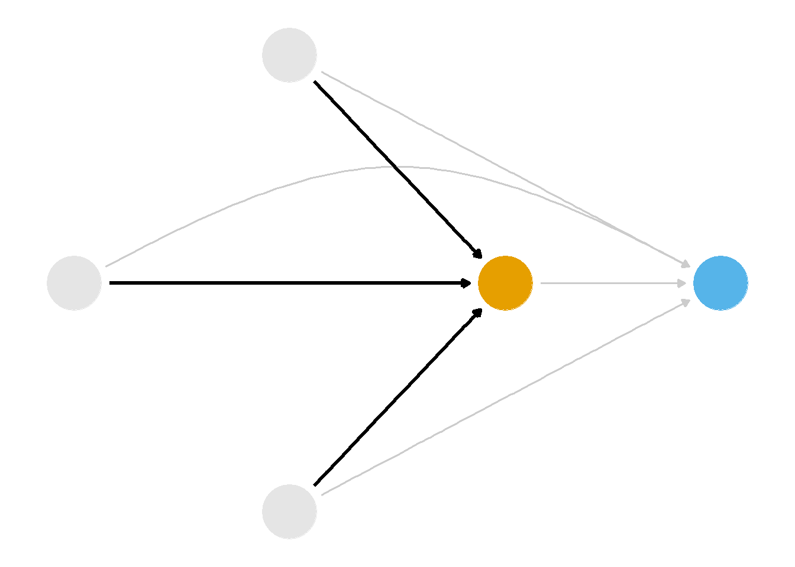
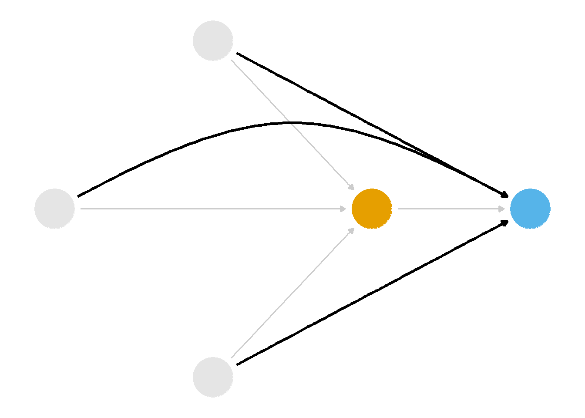
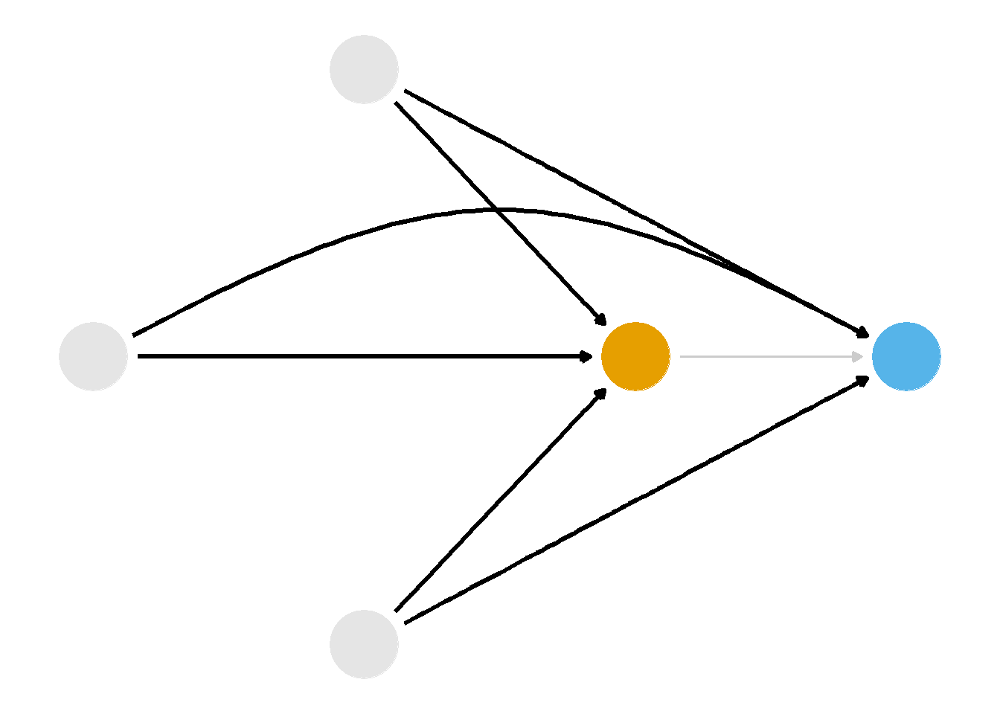
首先，我们可以对混杂因子与暴露之间的关系建模，如 图 62.2 所示。 一类使用倾向评分（即暴露发生的概率）的技术可以帮助我们做到这一点。 其次，我们可以对混杂因子与结局之间的关系建模，如 图 62.3 所示。 一类使用结局模型的技术可以帮助我们做到这一点。 我们在 从问题到答案：分层与结局模型 中见过一个结局模型，之后还会在 ?sec-g-comp 中看到另一种方法。 只要 DAG 正确，并且我们正确地对这些关系建模，倾向评分方法和结局模型方法都能得到正确答案。 或者，我们也可以像 图 62.3 中那样同时对两组关系建模。 一类称为双稳健估计量的技术可以帮助我们做到这一点，我们将在 ?sec-dr 和 ?sec-causal-ml 中再次讨论它。
接下来的几章将介绍如何使用 图 62.2 所示的一类技术，通过倾向评分关闭这些路径。 首先，想象一下如果 Disney 对“额外魔法时段”进行随机分配，会是什么情况。 假设每天被分配到额外魔法时段的概率都是 0.5，因此大约一半的日期有额外魔法时段，另一半没有。 在这种情况下，图 62.2 中突出显示的箭头不会存在，但 图 62.3 中突出显示的箭头会存在：我们干预的是暴露——某天是否有额外魔法时段——而不是结局——公布的等候时间。 当天历史最高气温、公园闭园时间和票价季节仍然会影响公布的等候时间，但不会影响额外魔法时段。 此时，每个日期的暴露概率——倾向评分——都是 0.5。 换句话说，在一项实验中，倾向评分是已知的。 某个日期通过 rbinom(1, 1, 0.5) 进行随机分配。
假设 Disney 开展了一项更复杂的实验：在 DAG 的三个变量各自的水平内随机分配暴露。 例如，假设每个日期的基线概率都是 0.5。 在这项实验中，历史最高气温 >= 80 华氏度会使暴露概率降低 0.1，公园在晚上 10 点前闭园会使概率提高 0.2，而处于旺季票价季节会使概率降低 0.3。 对于一个历史最高气温为 86 度、晚上 9:00 闭园且处于旺季票价季节的日期，该日早晨被随机分配额外魔法时段的概率为 \(0.5 - 0.1 + 0.2 - 0.25 = 0.35\)，或者使用 rbinom(1, 1, 0.35)。 这仍然是一项随机实验，只不过是在协变量的各个水平内进行随机化。 它带来了条件可交换性，这与我们在非随机数据中必须作出的假设非常相似：在协变量水平内，各日期是可交换的。
不过，在我们的案例中，这些概率并不知道。 如果我们能在这些非随机数据中找到“隐藏的实验”呢？ 记住，是某个人决定在哪些日期安排额外魔法时段。 这个决策过程是什么样的？ 如果我们能够结合领域知识——了解哪些因素参与了处理分配、并且这些因素也会影响结局——以及统计方法——估计这些条件概率——那么或许可以利用这些概率实现可交换性，并计算无偏的因果效应。 Rosenbaum 和 Rubin (1983) 表明，只要满足 因果假设 中讨论的假设，在观察性研究中对倾向评分进行条件化就可以得到暴露效应的无偏估计。
估计倾向评分的方法有很多；对于二元暴露，通常使用逻辑回归，当然也会使用其他方法。 虽然从因果角度看，逻辑回归的估计值可能难以解释（我们将在 ?sec-binary 中更详细地介绍），但它非常擅长预测经过良好校准的概率。 以暴露为预测值、以混杂因子为协变量的逻辑回归，是构建倾向评分的一个很好起点。
下面给出了使用 glm() 通过逻辑回归拟合倾向评分模型的伪代码。 第一个参数是模型，左侧为暴露，右侧为混杂因子。 data 参数接收数据框，family = binomial() 参数表示应使用逻辑回归拟合该模型（而不是其他广义线性模型，不过在倾向评分建模中有时也会使用其他链接函数）。 你可能以前已经拟合过类似模型，但这里的关键细节是：我们预测的是暴露发生的概率（而不是结局附近的某个量；稍后会讲到这一点），并且预测变量是根据 DAG 确定的混杂因子。 正如 随机试验中的因果方法 中所见，如果存在只预测结局、却与暴露无关的预测变量，为了提高精确性，我们可能也希望将它们纳入模型。
glm(
# predict the probability of treatment
exposure ~ confounder_1 + confounder_2,
data = df,
# using logistic regression
family = binomial()
)我们可以使用 predict() 或 fitted()，在概率尺度上提取预测值，从而得到倾向评分。 不过，利用 {broom} 包中的 augment() 函数，我们可以一步提取这些倾向评分并将其添加到原始数据框中，因此这里采用这种方法。 默认情况下，预测值位于线性 logit尺度上。 将参数 type.predict 设置为 "response" 表示我们希望在概率尺度上提取预测值。 data 参数包含原始数据框；如果将其留空，我们得到的只会是包含倾向评分模型中变量的数据框。 但是，我们还需要结局，因此使用完整数据框很方便，即使数据集中没有新的日期。 这段代码将输出一个新的数据框，它包含 df 中的所有成分，以及与拟合的逻辑回归模型对应的六个附加列。 .fitted 列就是倾向评分。 broom 的一个便利之处在于，它的函数在 R 的不同模型中返回的列是一致的，因此本章代码可以适用于许多类型的 broom 输出。
glm(
exposure ~ confounder_1 + confounder_2,
data = df,
family = binomial()
) |>
# get back the original data frame with the predicted probabilities
# in the `.fitted` column
augment(type.predict = "response", data = df)让我们把这个流程应用到我们的案例中。
我们可以使用 {touringplans} 包中的 seven_dwarfs_train_2018 数据集构建倾向评分模型。 首先，需要将数据子集化，只保留上午 9 点至 10 点之间的平均等候时间。 然后，使用 glm() 函数拟合倾向评分模型，根据上面指定的三个混杂因子预测 park_extra_magic_morning。 我们将通过 augment() 把倾向评分添加到数据框中。
library(broom)
library(touringplans)
seven_dwarfs_9 <- seven_dwarfs_train_2018 |>
filter(wait_hour == 9)
ps_mod <- glm(
park_extra_magic_morning ~ park_ticket_season +
park_close +
park_temperature_high,
data = seven_dwarfs_9,
family = binomial()
)
seven_dwarfs_9_with_ps <- ps_mod |>
augment(type.predict = "response", data = seven_dwarfs_9)首先，我们可能会问这个模型的表现如何。 一方面，模型统计量无法告诉我们控制混杂的效果有多好。 不过，我们确实可以对模型的行为有一些预期。例如，预测模型应该校准良好。 这意味着，如果查看所有预测概率为 0.3 的日期，其中大约 30% 应该实际有额外魔法时段。 我们可以将数据按倾向评分分箱，然后计算每个箱中实际有额外魔法时段的日期比例，以此进行检查。 图 62.5 展示了倾向评分模型的校准图。 这些点接近 45 度线，说明模型校准良好。 逻辑回归模型往往具有良好的校准性，因此这是一个好迹象。 不过，在倾向评分较高的区域，我们的点很少，因此对这些区域更加不确定。 校准对于可能校准不佳的机器学习模型尤其有用。 如果发现模型在这方面存在问题，{propensity} 可以使用 ps_calibrate() 通过逻辑回归校准模型。
library(halfmoon)
plot_model_calibration(ps_mod, method = "windowed")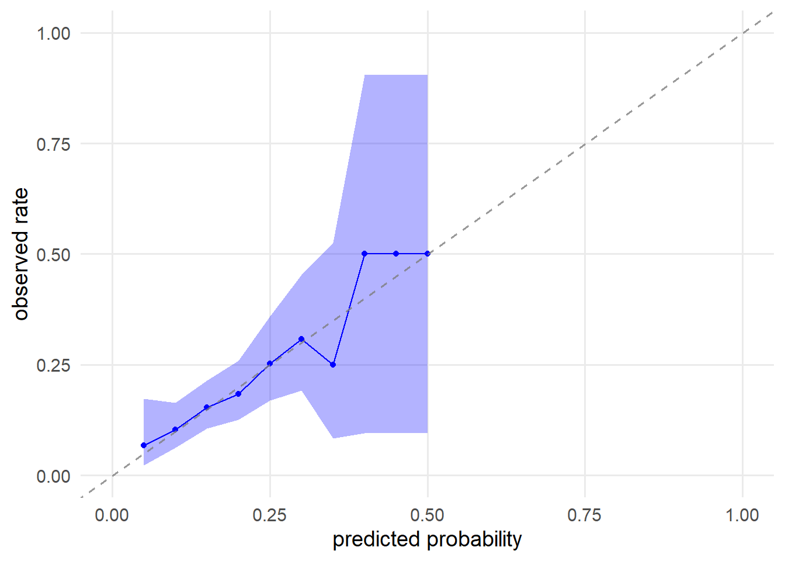
另一个常见的模型表现检查方法是受试者工作特征曲线（ROC）。 ROC 曲线在各种阈值设置下绘制真阳性率（敏感度）与假阳性率（1 - 特异度）的关系。 ROC 衡量的是区分能力：模型能够多好地区分有额外魔法时段和没有额外魔法时段的日期。 这意味着，如果随机选择一个有额外魔法时段的日期和一个没有额外魔法时段的日期，模型更常会为前者分配更高的倾向评分。 45 度线表示没有区分能力（随机机会），而贴近左上角的曲线表示完美区分。 曲线下面积（AUC）是区分能力的汇总指标，取值范围为 0.5（没有区分能力）到 1（完美区分）。 在预测建模中，目标通常是最大化区分能力。 然而，在因果模型中，完美区分将表示违反正值性：某些日期安排额外魔法时段的概率为 0%，而另一些日期的概率为 100%。 一定程度的区分能力则表明我们识别出了组间差异。 对于因果推断而言，没有明确的“良好”AUC 截止值（例如，一项随机试验预期 AUC 为 0.5，因为组间唯一需要区分的是组分配），但 0.6 到 0.8 之间的取值通常说明我们从混杂因子中捕捉到了足够的信号，可以用于调整，同时又没有强到造成正值性问题。 不过，与预测建模不同，我们并不是要把 AUC 优化到这个范围；我们把它作为一种诊断工具。 我们将在 ?sec-eval-ps-model 中再次讨论 AUC 和 ROC 曲线。
seven_dwarfs_9_with_ps |>
check_model_roc_curve(park_extra_magic_morning, .fitted) |>
plot_model_roc_curve()Ignoring unknown labels:
* colour : "method"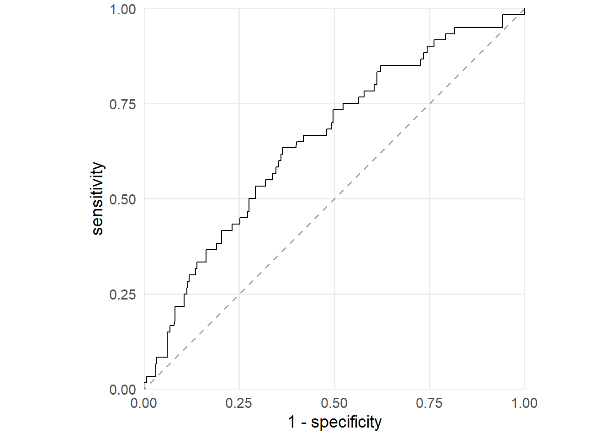
我们的模型 AUC 为 0.65：
check_model_auc(
seven_dwarfs_9_with_ps,
.exposure = park_extra_magic_morning,
.fitted = .fitted
)# A tibble: 1 x 2
method auc
<chr> <dbl>
1 observed 0.654现在直接看看倾向评分。 表 62.1 展示了数据集中前六个日期的倾向评分（.fitted 列），以及每个日期的暴露、结局和混杂因子取值。 这里的倾向评分，是在给定观测到的混杂因子的情况下，某个日期早晨有额外魔法时段的概率；本例中的混杂因子是该日期的历史最高气温、公园闭园时间和票价季节。 例如，1 月 1 日在给定票价季节（本例中为旺季）、公园闭园时间（晚上 11 点）和当天历史最高气温（58.6 华氏度）的情况下，Magic Kingdom 早晨有额外魔法时段的概率为 30.2%。 在这一天，早晨没有额外魔法时段（如 park_extra_magic_morning 列第一行的 0 所示）。 1 月 5 日的概率同样较低（18.4%），但这一天早晨有额外魔法时段。
library(gt)
seven_dwarfs_9_with_ps |>
select(
park_date,
park_extra_magic_morning,
.fitted,
park_ticket_season,
park_close,
park_temperature_high
) |>
head() |>
gt() |>
fmt_number(decimals = 3) |>
fmt_integer(park_extra_magic_morning) |>
cols_label(
.fitted = "P(EMM)",
park_date = "Date",
park_extra_magic_morning = "Extra Magic Mornings",
park_ticket_season = "Ticket Season",
park_close = "Close time",
park_temperature_high = "Historic Temp."
)seven_dwarfs_9_with_ps dataset, including their propensity scores in the .fitted column.
| Date | Extra Magic Mornings | P(EMM) | Ticket Season | Close time | Historic Temp. |
|---|---|---|---|---|---|
| 2018-01-01 | 0 | 0.302 | peak | 23:00:00 | 58.630 |
| 2018-01-02 | 0 | 0.282 | peak | 24:00:00 | 53.650 |
| 2018-01-03 | 0 | 0.290 | peak | 24:00:00 | 51.110 |
| 2018-01-04 | 0 | 0.188 | regular | 24:00:00 | 52.660 |
| 2018-01-05 | 1 | 0.184 | regular | 24:00:00 | 54.290 |
| 2018-01-06 | 0 | 0.207 | regular | 23:00:00 | 56.250 |
按暴露组查看倾向评分的分布，有助于直观了解其形态。 镜像直方图是实现这一目的的一种好方法。 要创建镜像直方图，我们将使用 {halfmoon} 包的 geom_mirror_histogram()。 下面的代码创建两个倾向评分直方图：暴露组（早晨有额外魔法时段的日期）位于“上方”，未暴露组位于“下方”。 我们还将通过 scale_y_continuous(labels = abs) 调整 y 轴标签，使用绝对值（而不是下方直方图中的负值）。
ggplot(
seven_dwarfs_9_with_ps,
aes(.fitted, fill = factor(park_extra_magic_morning))
) +
geom_mirror_histogram(bins = 50) +
scale_y_continuous(labels = abs) +
labs(x = "propensity score", fill = "extra magic morning")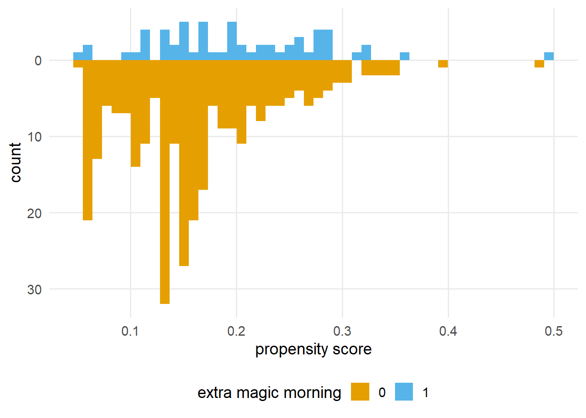
我们将在应用某种方法（例如加权或匹配）后，在 ?sec-eval-ps-model 中更详细地探讨如何评估倾向评分模型；不过，现在可以从有效因果推断所需的因果假设角度，思考我们看到的现象。 在 探索因果假设 中，我们看到可交换性和正值性都可能存在问题。 我们相当确信，这个问题不存在因果一致性问题，但查看原始倾向评分（在应用加权或匹配之前）可以让我们了解另外两个假设。 数据永远无法证明我们的假设正确或错误，但可以提供一些证据。
对于正值性和可交换性，我们要寻找两点：重叠和平衡。 重叠是指不同暴露组的倾向评分范围相互重叠，有时也称为共同支持。 重叠与正值性有关：如果倾向评分的某些区域只有一个暴露组有观测值，就可能存在正值性违背。 另一个需要关注的是人群之间的平衡。 在随机化情境下，我们预期两组的分布大致相同，因为暴露概率与基线协变量无关。 这种平衡也体现了“可交换性”这一用词的含义：我们应该能够将两组重新分配到另一种暴露下，并仍然得到正确答案。
图 62.8 展示了模拟情景，分别代表重叠和平衡良好、中等以及较差时通常会看到的分布。 较差的平衡和重叠可能加剧偏倚和方差，并降低我们对因果假设的信心。
library(patchwork)
set.seed(2025)
make_model <- function(n = 1000, intercept, slope) {
df <- tibble(
z = rnorm(n),
exposure = rbinom(n, 1, plogis(intercept + slope * z))
)
glm(exposure ~ z, data = df, family = binomial)
}
models_overlap <- list(
good = make_model(intercept = 0, slope = 0.5),
moderate = make_model(intercept = 0, slope = 1.5),
poor = make_model(intercept = 0, slope = 3.0)
)
plot_ps <- function(.x, .y, title = "Overlap") {
.x |>
augment(type.predict = "response") |>
ggplot(aes(.fitted, fill = factor(exposure))) +
geom_mirror_histogram(bins = 50) +
scale_y_continuous(labels = abs) +
labs(
x = "propensity score",
fill = "exposure",
title = paste(str_to_title(.y), title)
) +
theme(legend.position = "none")
}
plots_overlap <- imap(
models_overlap,
plot_ps
)
models_balance <- list(
good = make_model(intercept = 0.0, slope = 1.5),
moderate = make_model(intercept = log(0.25 / 0.75), slope = 1.5),
poor = make_model(intercept = log(0.10 / 0.90), slope = 1.5)
)
plots_balance <- imap(
models_balance,
plot_ps,
title = "Balance"
)
plots_balance$moderate <- plots_balance$moderate +
theme(legend.position = "bottom")
(plots_overlap$good + plots_overlap$moderate + plots_overlap$poor) /
(plots_balance$good + plots_balance$moderate + plots_balance$poor)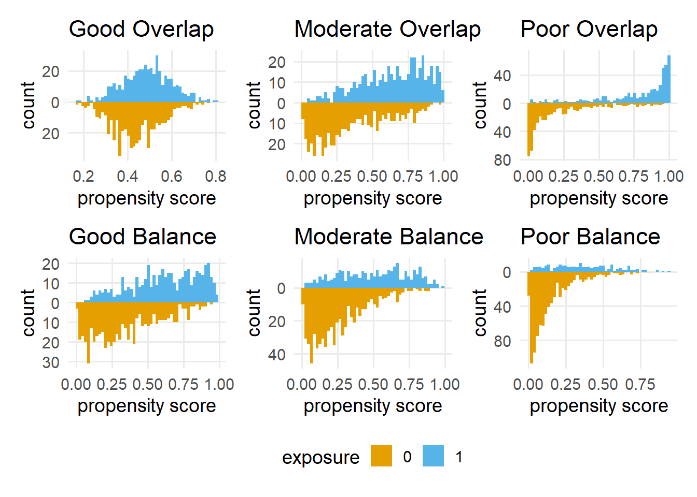
图 62.7 从单一维度（倾向评分）展示了这些假设的情况。 我们确实看到了重叠和平衡方面的问题。 显然，就分布形状和日期数量而言，两组之间存在差异。 我们还来看看每组倾向评分的范围。
seven_dwarfs_9_with_ps |>
group_by(park_extra_magic_morning) |>
reframe(range = range(.fitted))# A tibble: 4 x 2
park_extra_magic_morning range
<dbl> <dbl>
1 0 0.0547
2 0 0.482
3 1 0.0506
4 1 0.495 两组之间的范围似乎非常接近。 检查尾部的一个有用方法，是查看倾向评分低于暴露组最低概率的未暴露观测数量，以及倾向评分高于未暴露组最高概率的暴露观测数量。
seven_dwarfs_9_with_ps |>
mutate(
support = case_when(
park_extra_magic_morning == 0 &
.fitted < min(.fitted[park_extra_magic_morning == 1]) ~ "unexp_below",
park_extra_magic_morning == 1 &
.fitted > max(.fitted[park_extra_magic_morning == 0]) ~ "exp_above",
.default = "inside_support",
.ptype = factor(levels = c("unexp_below", "inside_support", "exp_above"))
)
) |>
count(support, .drop = FALSE)# A tibble: 3 x 2
support n
<fct> <int>
1 unexp_below 0
2 inside_support 353
3 exp_above 1不过，查看 图 62.7 可见，某些区域较为稀疏，这意味着某些组合存在正值性违背。 例如，倾向评分低于 10% 的日期中，没有额外魔法时段的日期多得多。
seven_dwarfs_9_with_ps |>
count(park_extra_magic_morning, low_prob = .fitted <= 0.1)# A tibble: 4 x 3
park_extra_magic_morning low_prob n
<dbl> <lgl> <int>
1 0 FALSE 239
2 0 TRUE 55
3 1 FALSE 56
4 1 TRUE 4我们可能看到的是结构性正值性问题与随机性违背的组合（按照 Disney 的决策过程，有些日期永远不会或总会安排额外魔法时段）。 由于一年中的日期数量有限，而且只有大约 17% 的日期在早晨有额外魔法时段，因此我们预期会出现一些稀疏区域。 例如，如果以相同比例随机分配有暴露和无暴露日期，图 62.9 就会显示这种图形。 （如果使用不同的种子进行尝试，你会看到这些数据容易出现此类随机违背。） 与基于结局模型的方法和一些双稳健方法相比，倾向评分方法更容易受到正值性违背的影响；我们需要持续关注这一点。
set.seed(2025)
seven_dwarfs_9 |>
mutate(randomized_emm = rbinom(n(), 1, 0.17)) |>
glm(
randomized_emm ~ park_ticket_season + park_close + park_temperature_high,
data = _,
family = binomial()
) |>
augment(type.predict = "response") |>
ggplot(
aes(.fitted, fill = factor(randomized_emm))
) +
geom_mirror_histogram(bins = 50) +
scale_y_continuous(labels = abs) +
labs(x = "propensity score", fill = "extra magic morning")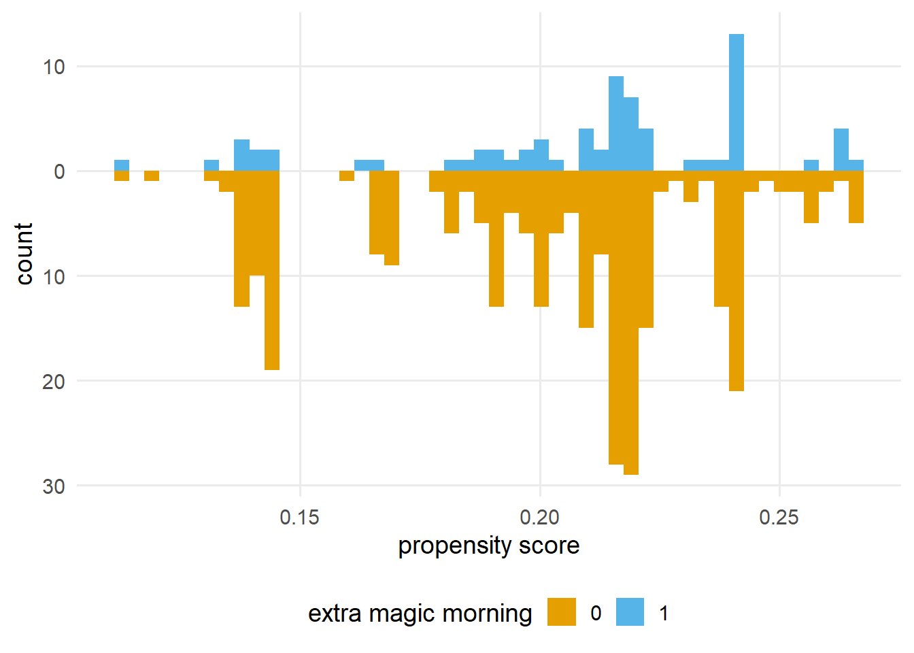
针对这些问题，我们能做些什么？ 虽然我们需要良好的领域知识来建立假设基础（也许还需要更好的排除标准，以排除在结构上无法安排额外魔法时段的日期），但利用倾向评分中的信息既可以帮助改善可交换性，也可以在某些方法中帮助改善正值性。
倾向评分的核心作用是平衡工具。 我们用它帮助使暴露组具有可交换性（正如将在 ?sec-estimands 中看到的，有时也可以用它改善正值性）。 将倾向评分纳入分析有许多方法。 常见技术包括分层（在倾向评分分层内估计因果效应）、匹配、加权，以及直接协变量调整（将倾向评分作为协变量纳入结局模型）。 本节将重点介绍匹配和加权。
匹配和加权是构建混杂因子更平衡人群的两种不同方法。 在匹配中，我们通过选择一组观测值创建一个子人群，并希望在其中可交换性成立。 在加权中，我们对观测值重新加权，创建一个希望可交换性成立的伪人群。
匹配是一种直观的方法，可以构建能够进行同类比较的人群。 想象一下，我们从一个暴露观测值开始。 在无限总体中，我们可以手动挑选一个未暴露观测值，二者唯一的差异就是暴露状态。 换句话说，我们匹配两个混杂因子取值相同、但暴露取值相反的观测值。 这称为精确匹配。 对于非常大的数据，或混杂因子的数量和取值都非常有限的情况，精确匹配效果很好；但随着混杂因子的数量增加、且取值变得连续，寻找这样的匹配对象会越来越复杂。 这时，倾向评分这一汇总所有混杂因子的指标就发挥作用了。
{MatchIt} 包是 R 中最灵活的匹配工具之一。 让我们使用 matchit() 匹配相似的日期。 （如果不在 distance 参数中包含预先计算的倾向评分，matchit() 会替我们重新拟合逻辑回归。） 2018 年 Magic Kingdom 共有 60 天安排了早晨额外魔法时段。 对于这 60 个暴露日期中的每一天，matchit() 都通过使用构建好的倾向评分实施最近邻匹配，找到了一个可比较的未暴露日期。 查看输出还可以看到，默认的目标估计量是“ATT”，即处理者中的平均处理效应。 我们将在 ?sec-estimands 中讨论这一估计目标和其他几个估计目标，但现在需要知道的重要一点是：matchit() 会保留所有有早晨额外魔法时段的日期，并可能丢弃一些未暴露日期。
library(MatchIt)
ps_logit_scale <- predict(ps_mod)
matchit_obj <- matchit(
park_extra_magic_morning ~ park_ticket_season +
park_close +
park_temperature_high,
data = seven_dwarfs_9_with_ps,
# match on the propensity score we fit on the logit scale
# TODO: @Lucy, should we supply this on the logit scale or probability scale?
distance = ps_logit_scale
)
matchit_objA `matchit` object
- method: 1:1 nearest neighbor matching without replacement
- distance: User-defined - number of obs.: 354 (original), 120 (matched)
- target estimand: ATT
- covariates: park_ticket_season, park_close, park_temperature_high我们可以使用 get_matches() 函数创建一个数据框，其中保留原始变量，但只包含那些成功匹配的观测值。 注意，我们的样本量已经从 354 天减少到 120 天。
matched_data <- get_matches(matchit_obj) |>
as_tibble()
matched_data# A tibble: 120 x 24
id subclass weights park_date wait_hour
<chr> <fct> <dbl> <date> <int>
1 5 1 1 2018-01-05 9
2 340 1 1 2018-12-17 9
3 12 2 1 2018-01-12 9
4 180 2 1 2018-07-07 9
5 19 3 1 2018-01-19 9
6 236 3 1 2018-09-01 9
7 25 4 1 2018-01-26 9
8 66 4 1 2018-03-08 9
9 33 5 1 2018-02-03 9
10 20 5 1 2018-01-20 9
# i 110 more rows
# i 19 more variables: attraction_name <chr>,
# wait_minutes_actual_avg <dbl>,
# wait_minutes_posted_avg <dbl>,
# attraction_park <chr>, attraction_land <chr>,
# park_open <time>, park_close <time>,
# park_extra_magic_morning <dbl>, ...subclass 列告诉我们哪些日期相互匹配。 例如，对于 subclass == 1，我们有一对日期，其中一天有、另一天没有早晨额外魔法时段。 它们的倾向评分相同。
matched_data |>
filter(subclass == 1) |>
select(park_date, park_extra_magic_morning, .fitted)# A tibble: 2 x 3
park_date park_extra_magic_morning .fitted
<date> <dbl> <dbl>
1 2018-01-05 1 0.184
2 2018-12-17 0 0.184如果仔细查看它们的协变量，就能明白原因。 这不是精确匹配——气温和公园闭园变量略有不同——但可以看到，这两个日期的票价季节都是常规季节，历史最高气温较低，且闭园时间较晚。 它们看起来像彼此的良好反事实吗？
matched_data |>
filter(subclass == 1) |>
select(park_date, park_temperature_high, park_ticket_season, park_close)# A tibble: 2 x 4
park_date park_temperature_high park_ticket_season
<date> <dbl> <chr>
1 2018-01-05 54.3 regular
2 2018-12-17 65.4 regular
# i 1 more variable: park_close <time>第 45 对的倾向评分也很相近，不过没有第 1 对那么接近。
matched_data |>
filter(subclass == 45) |>
select(park_date, park_extra_magic_morning, .fitted)# A tibble: 2 x 3
park_date park_extra_magic_morning .fitted
<date> <dbl> <dbl>
1 2018-11-16 1 0.360
2 2018-11-05 0 0.349然而，它们的实际变量并没有那么接近。 历史最高气温相差约 20 度，而且虽然两者的公园闭园时间都较早，但相互之间的差距比第 1 对更大。
matched_data |>
filter(subclass == 45) |>
select(park_date, park_temperature_high, park_ticket_season, park_close)# A tibble: 2 x 4
park_date park_temperature_high park_ticket_season
<date> <dbl> <chr>
1 2018-11-16 64.5 regular
2 2018-11-05 83.9 regular
# i 1 more variable: park_close <time>我们可能还想知道哪些日期没有被匹配。 由于保留了所有有额外魔法时段的日期，因此知道所有被删除的日期都没有额外魔法时段。 我们可以使用反连接检查哪些日期不在匹配后的数据中。
seven_dwarfs_9_with_ps |>
anti_join(matched_data, by = "park_date") |>
select(park_date, park_extra_magic_morning, .fitted)# A tibble: 234 x 3
park_date park_extra_magic_morning .fitted
<date> <dbl> <dbl>
1 2018-01-01 0 0.302
2 2018-01-03 0 0.290
3 2018-01-04 0 0.188
4 2018-01-06 0 0.207
5 2018-01-08 0 0.102
6 2018-01-09 0 0.0960
7 2018-01-10 0 0.0972
8 2018-01-11 0 0.0895
9 2018-01-13 0 0.165
10 2018-01-14 0 0.171
# i 224 more rows我们可能会觉得这些被丢弃的数据中仍然包含大量有价值的统计信息。 对每个有额外魔法时段的日期使用多个匹配对象，可以提高统计精确性。 前面使用的是 \(1:1\) 匹配，但 matchit() 也通过 ratio 参数支持 \(1:k\) 匹配。 例如，当 ratio = 2 时，每个有早晨额外魔法时段的日期会得到两个匹配对象，样本量将达到 180。
不过，当数据有限时，添加额外匹配对象需要谨慎。 我们尝试匹配的日期越多，匹配质量就会越差。 例如，当我们尝试为每个有早晨额外魔法时段的日期寻找四个匹配对象时，subclass == 1 的后续匹配对象的倾向评分开始变得非常不同。 这是一个偏倚—方差权衡：匹配对象越多，精确性越好，但越难找到良好的匹配对象，这可能增加偏倚。
matchit(
park_extra_magic_morning ~ park_ticket_season +
park_close +
park_temperature_high,
data = seven_dwarfs_9_with_ps,
distance = ps_logit_scale,
ratio = 4
) |>
get_matches() |>
as_tibble() |>
filter(subclass == 1) |>
select(park_date, park_extra_magic_morning, .fitted)# A tibble: 5 x 3
park_date park_extra_magic_morning .fitted
<date> <dbl> <dbl>
1 2018-01-05 1 0.184
2 2018-12-17 0 0.184
3 2018-04-11 0 0.187
4 2018-04-22 0 0.175
5 2018-06-21 0 0.138我们可以要求 matchit() 只匹配一定距离以内的观测值，从而控制匹配质量。 换句话说，我们可以要求不要匹配倾向评分相差超过指定程度的观测值。 我们通过设置卡钳来控制这一点。 卡钳是在 logit 尺度上的动态距离，我们将其作为可匹配的两个观测值之间的最大差异。 之所以说它是动态的，是因为我们为 caliper 参数提供的任何值都会乘以倾向评分的标准差。 不过，让我们尝试使用卡钳为 0.2 的 1:2 匹配。 使用卡钳匹配后得到 178 天，比 \(60 + 60*2\) 少两天。 有两天安排了早晨额外魔法时段，但只得到一个匹配的对照，而不是两个。
mtchs <- matchit(
park_extra_magic_morning ~ park_ticket_season +
park_close +
park_temperature_high,
data = seven_dwarfs_9_with_ps,
distance = ps_logit_scale,
ratio = 2,
caliper = 0.2
)
mtchs |>
get_matches() |>
group_by(subclass) |>
summarise(n = n()) |>
filter(n < 3)# A tibble: 2 x 2
subclass n
<fct> <int>
1 17 2
2 50 2有一点很重要：设置卡钳后，根据被删除的观测值及其数量，我们进行推断的人群可能会发生变化。 我们将在 ?sec-estimands 中再次讨论这一点。
把匹配看作一种粗略的加权方式：在最终样本中，所有成功匹配的个体权重为 1，未匹配的个体权重为 0。 另一种方法是让权重更加平滑，通过赋予权重，使加权伪总体中的目标协变量平均达到平衡。 我们已经有一个便捷的协变量摘要，可用于需要平衡的协变量：倾向评分。 我们不在倾向评分上进行匹配，而是以它为基础构造这些权重。 根据所关注的估计目标，我们可以计算许多不同的权重（详见 ?sec-estimands）。 本节将重点介绍平均处理效应（ATE）权重，通常称为逆概率权重。 权重的构造方式如下：每个观测的权重，等于其实际接受该暴露的概率的倒数。
\[ w_{ATE} = \frac{X}{p} + \frac{(1 - X)}{1 - p} \]
例如，给定暴露前协变量，观测 1 被暴露的可能性很高（\(p = 0.9\)），但实际上没有暴露，那么它的权重将为 10（\(w_1 = 1 / (1 - 0.9)\)）。 同样地，给定暴露前协变量，观测 2 被暴露的可能性很高（\(p = 0.9\)），并且实际上接受了暴露，那么它的权重将为 1.1（\(w_2 = 1 / 0.9\)）。 直观地说，对于那些根据测量到的混杂因子，看起来能够为构造反事实提供有用信息的观测，我们会赋予更大的权重——我们本来预测它们会接受暴露，但它们却碰巧没有接受，反之亦然。
{propensity} 包通过遵循 wt_estimand() 命名模式的函数，计算多种倾向评分权重。 要计算 ATE，我们使用 wt_ate()，并向其提供拟合得到的倾向评分和观测到的暴露值。
library(propensity)
seven_dwarfs_9_with_wt <- seven_dwarfs_9_with_ps |>
mutate(w_ate = wt_ate(.fitted, park_extra_magic_morning))表 62.2 展示了前六行中的权重。 例如，1 月 1 日没有 Extra Magic Hours，而它没有这些时段的概率只有 \(1 - 0.3 = 0.7\)。 因此，这并不是特别令人意外的一天。 它的权重为 1.4。 然而，1 月 5 日更令人意外：它接受 Extra Magic Hours 的概率为 0.18，但实际上确实有 Extra Magic Hours。 这使它成为其他那些没有 Extra Magic Hours 的日期的一个良好反事实，因此其权重为 5.4。
seven_dwarfs_9_with_wt |>
select(
park_date,
park_extra_magic_morning,
park_ticket_season,
park_close,
park_temperature_high,
.fitted,
w_ate
) |>
head() |>
gt() |>
cols_label(
.fitted = "P(EMM)",
park_date = "Date",
park_extra_magic_morning = "Extra Magic Mornings",
park_ticket_season = "Ticket Season",
park_close = "Close time",
park_temperature_high = "Historic Temp.",
w_ate = "ATE Weights"
)seven_dwarfs_9_with_wt dataset, including their propensity scores in the .fitted column and weight in the w_ate column.
| Date | Extra Magic Mornings | Ticket Season | Close time | Historic Temp. | P(EMM) | ATE Weights |
|---|---|---|---|---|---|---|
| 2018-01-01 | 0 | peak | 23:00:00 | 58.63 | 0.3019 | 1.433 |
| 2018-01-02 | 0 | peak | 24:00:00 | 53.65 | 0.2815 | 1.392 |
| 2018-01-03 | 0 | peak | 24:00:00 | 51.11 | 0.2900 | 1.408 |
| 2018-01-04 | 0 | regular | 24:00:00 | 52.66 | 0.1881 | 1.232 |
| 2018-01-05 | 1 | regular | 24:00:00 | 54.29 | 0.1841 | 5.432 |
| 2018-01-06 | 0 | regular | 23:00:00 | 56.25 | 0.2074 | 1.262 |
如果你喜欢 MatchIt 的使用体验，它有一个姊妹包 {WeightIt}，遵循相同的设计原则，并提供许多实用功能。 我们将重点介绍 propensity；但如果你熟悉 MatchIt，WeightIt 也很容易使用。
wt_it <- WeightIt::weightit(
park_extra_magic_morning ~ park_ticket_season +
park_close +
park_temperature_high,
data = seven_dwarfs_9_with_ps,
ps = ".fitted"
)
wt_itA weightit object
- method: "glm" (propensity score weighting with GLM)
- number of obs.: 354
- sampling weights: none
- treatment: 2-category
- estimand: ATE
- covariates: park_ticket_season, park_close, park_temperature_highhead(wt_it$weights)[1] 1.433 1.392 1.408 1.232 5.432 1.262如果某天早晨预测获得 Extra Magic Hours 的概率非常低，但实际上确实获得了，那么它将得到很高的权重。 ATE 权重的最小值为 1，但最大值没有上限。 接受所观测暴露的概率越接近 0，权重就越高。 这意味着我们需要警惕极端权重。 极端权重是指会向最终的结局模型加入不恰当信息的权重。 极端权重往往会使我们的估计不稳定，导致精度下降，并可能带来更严重的偏倚。 图 62.10 展示了 ATE 权重的分布。
seven_dwarfs_9_with_wt |>
ggplot(aes(w_ate)) +
geom_histogram() +
scale_x_log10() +
xlab("ATE Weights")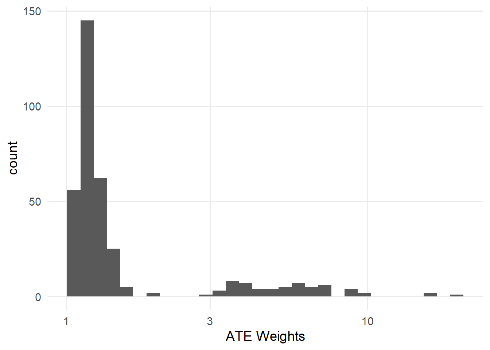
确实，有几天的权重超过了 10（表 62.3）。 例如，4 月 27 日被当作将近 20 天来处理！ 它可能是没有 Extra Magic Hours 的日期的良好反事实，但如此高的权重带来的方差会超过其所减少的偏倚。
seven_dwarfs_9_with_wt |>
filter(w_ate > 10) |>
select(
park_date,
park_extra_magic_morning,
park_ticket_season,
park_close,
park_temperature_high,
.fitted,
w_ate
) |>
gt() |>
cols_label(
.fitted = "P(EMM)",
park_date = "Date",
park_extra_magic_morning = "Extra Magic Mornings",
park_ticket_season = "Ticket Season",
park_close = "Close time",
park_temperature_high = "Historic Temp.",
w_ate = "ATE Weights"
)Warning: There was 1 warning in `filter()`.
i In argument: `w_ate > 10`.
Caused by warning in `vec_ptype2.psw.double()`:
! Converting psw to numeric
i Class-specific attributes and metadata have been
dropped
i Use explicit casting to numeric to avoid this
warning| Date | Extra Magic Mornings | Ticket Season | Close time | Historic Temp. | P(EMM) | ATE Weights |
|---|---|---|---|---|---|---|
| 2018-01-26 | 1 | value | 20:00:00 | 73.25 | 0.09867 | 10.13 |
| 2018-02-09 | 1 | value | 22:00:00 | 81.50 | 0.06261 | 15.97 |
| 2018-03-02 | 1 | value | 22:00:00 | 81.29 | 0.06281 | 15.92 |
| 2018-04-27 | 1 | value | 23:00:00 | 84.33 | 0.05059 | 19.77 |
我们可以通过使用稳定化因子来缓解极端权重造成的部分不稳定性：已暴露和未暴露个体所占的比例。 我们不再将接受到的暴露概率取倒数，而是把该比例放在分子中。 稳定化会对权重产生有趣的影响。 首先，它通过缩小权重的离散程度来改善方差。 其次，它会生成均值为 1 的权重。 换句话说，伪总体的规模大致与原总体相同。
seven_dwarfs_9_with_wt <- seven_dwarfs_9_with_ps |>
mutate(stbl_wts = wt_ate(.fitted, park_extra_magic_morning, stabilize = TRUE))
seven_dwarfs_9_with_wt |>
summarize(
mean = mean(stbl_wts),
min = min(stbl_wts),
max = max(stbl_wts),
n = n(),
sum = sum(stbl_wts)
)# A tibble: 1 x 5
mean min max n sum
<dbl> <dbl> <dbl> <int> <dbl>
1 1.00 0.342 3.35 354 355.seven_dwarfs_9_with_wt |>
ggplot(aes(stbl_wts)) +
geom_histogram() +
scale_x_log10() +
xlab("Stabilized ATE Weights")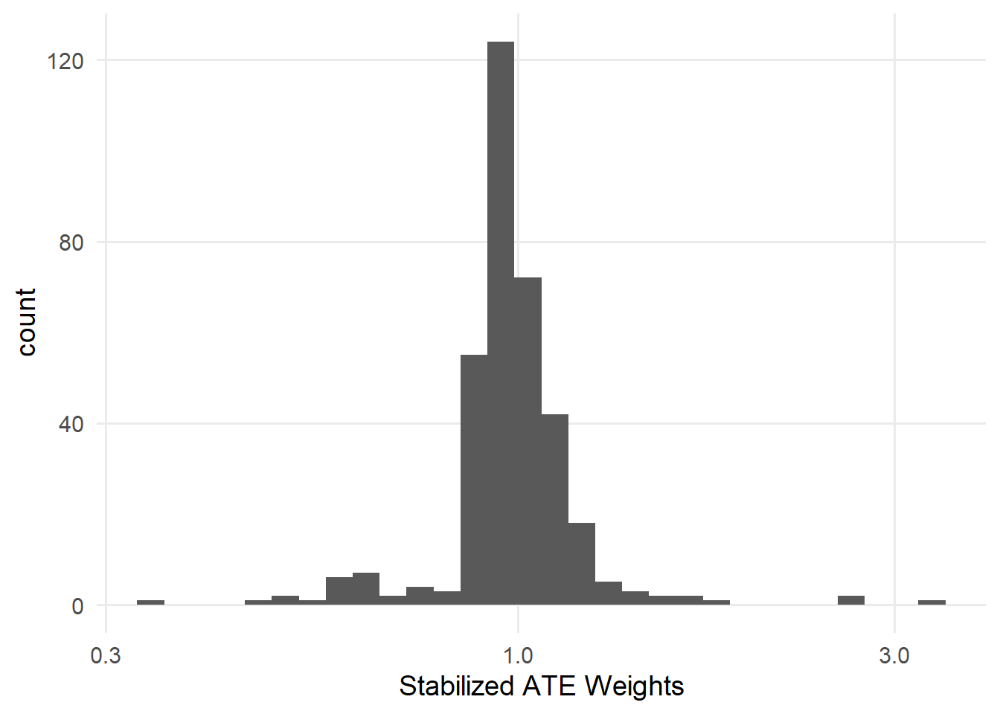
另一组用于处理极端权重（以及重叠不足）的技术是修剪和截尾。 修剪是指设定倾向评分的可接受范围，并将落在该范围之外的观测从分析中删除。 进行修剪时，应重新拟合倾向评分模型，以改善拟合和校准。 截尾是指不删除观测，而是将超出可接受范围的任何值截断为该范围的最小值或最大值。 截尾有时也称为Winsor 化。 请注意，有时作者会交替使用“trim”和“truncate”，甚至赋予它们相反的含义，因此要明确自己所指的含义，也要确保理解其他分析者的含义。
propensity 提供了用于管理这些过程的辅助函数。 ps_trim() 会修剪观测，ps_trunc() 会对观测进行截尾。 ps_refit() 只使用未修剪的观测重新拟合倾向评分。 这里有几点需要注意。 首先，我们使用一种自适应方法来确定修剪评分的最佳范围；这种方法会优化所得观测的方差。 其次，我们对修剪后的倾向评分使用 ps_refit()，在不包含被修剪观测的情况下重新计算倾向评分。 第三，在 ps_trunc() 中，我们将倾向评分中低于第 1 百分位数的值截到第 1 百分位数。 研究者通常会将评分截尾到第 1 和第 99 百分位数，但由于我们的最高倾向评分约为 0.50，这样做不会产生极端权重，因此我们保持原值。
seven_dwarfs_9_with_wt <- seven_dwarfs_9_with_wt |>
mutate(
trimmed_ps = ps_trim(.fitted, method = "adaptive") |>
ps_refit(ps_mod),
trunc_ps = ps_trunc(.fitted, method = "pctl", lower = 0.01, upper = 1)
)修剪和截尾对样本的影响不同。 修剪后，样本中的观测会减少。 我们可以使用 is_unit_trimmed() 查看哪些观测被修剪了。 只有原始倾向评分较低范围内的观测被修剪。 它们在 trimmed_ps 中的值为 NA，因为使用 ps_refit() 时，它们未被纳入模型。
seven_dwarfs_9_with_wt |>
filter(is_unit_trimmed(trimmed_ps)) |>
select(park_date, park_extra_magic_morning, .fitted, trimmed_ps)# A tibble: 36 x 4
park_date park_extra_magic_mor~1 .fitted trimmed_ps
<date> <dbl> <dbl> <ps_trim>
1 2018-02-02 0 0.0695 NA
2 2018-02-09 1 0.0626 NA
3 2018-02-26 0 0.0581 NA
4 2018-02-27 0 0.0630 NA
5 2018-03-01 0 0.0702 NA
6 2018-03-02 1 0.0628 NA
7 2018-03-03 0 0.0601 NA
8 2018-04-24 0 0.0611 NA
9 2018-04-25 0 0.0631 NA
10 2018-04-26 0 0.0623 NA
# i 26 more rows
# i abbreviated name: 1: park_extra_magic_morning可以看到，这个子集中的重叠略有改善（图 62.12）。
ggplot(
seven_dwarfs_9_with_wt,
aes(trimmed_ps, fill = factor(park_extra_magic_morning))
) +
geom_mirror_histogram(bins = 50) +
scale_y_continuous(labels = abs) +
labs(x = "propensity score", fill = "extra magic morning")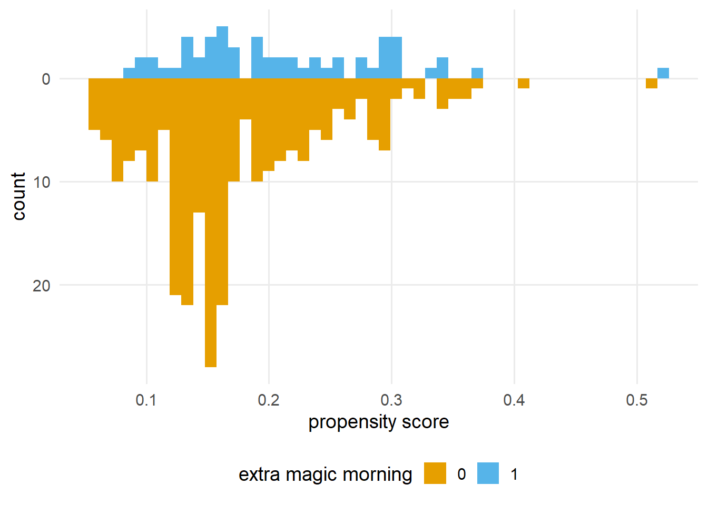
在截尾中，我们不会删除观测，而是强制使部分观测落在可接受范围内。 所有被截尾的观测（我们使用 is_unit_truncated() 找到）现在在 trunc_ps 中具有相同的值，该值等于 .fitted 的第 1 百分位数。
seven_dwarfs_9_with_wt |>
filter(is_unit_truncated(trunc_ps)) |>
select(park_date, park_extra_magic_morning, .fitted, trunc_ps)# A tibble: 4 x 4
park_date park_extra_magic_morning .fitted trunc_ps
<date> <dbl> <dbl> <ps_trun>
1 2018-04-27 1 0.0506 0.05744
2 2018-08-27 0 0.0547 0.05744
3 2018-10-01 0 0.0567 0.05744
4 2018-10-03 0 0.0566 0.05744可以看到，图左侧的截尾如何强制形成重叠（图 62.13）。 截尾不会丢弃个体（相较于修剪，这会提高样本量），但这种对倾向评分的强制改变可能不太直观。
ggplot(
seven_dwarfs_9_with_wt,
aes(trunc_ps, fill = factor(park_extra_magic_morning))
) +
geom_mirror_histogram(bins = 50) +
scale_y_continuous(labels = abs) +
labs(x = "propensity score", fill = "extra magic morning")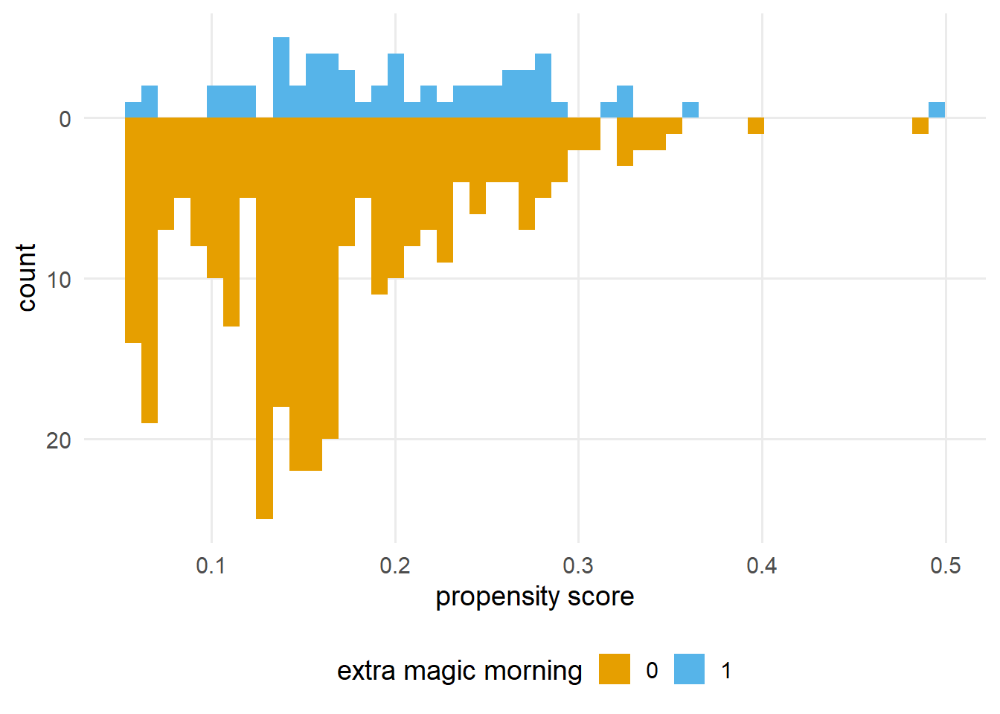
随后，我们可以基于修剪或截尾后的倾向评分计算权重。 事实上，我们可以将这些方法与稳定化权重结合使用。 让我们基于截尾后的倾向评分计算稳定化权重。 （我们也可以将截尾或修剪后的权重与匹配和卡钳结合使用，但这里不展示。） 图 62.14 展示了截尾并进行稳定化后权重的分布。
seven_dwarfs_9_with_wt <- seven_dwarfs_9_with_wt |>
mutate(
trunc_stbl_wt = wt_ate(
trunc_ps,
park_extra_magic_morning,
stabilize = TRUE
)
)
seven_dwarfs_9_with_wt |>
ggplot(aes(trunc_stbl_wt)) +
geom_histogram() +
scale_x_log10() +
xlab("Truncated and Stabilized ATE Weights")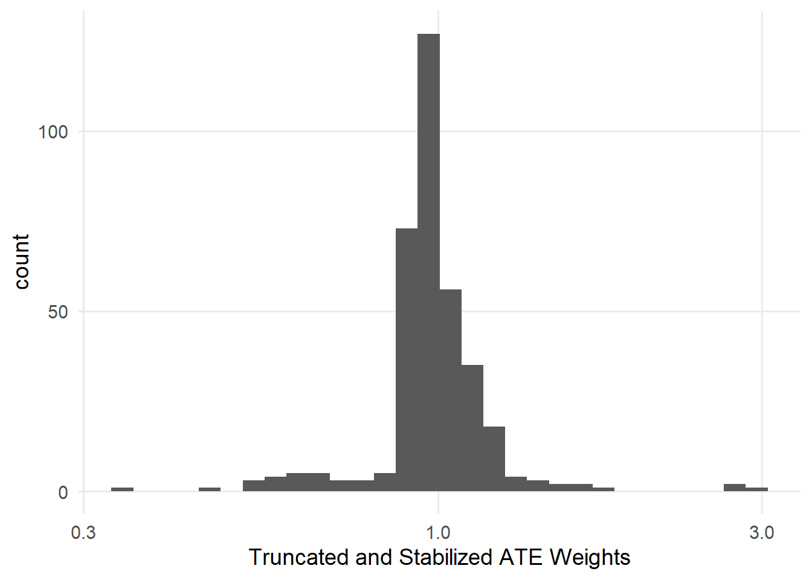
与使用卡钳一样，截尾和修剪可能会改变我们据以进行推断的总体。 我们将在 ?sec-estimands 中进一步考察这一点。
你可能已经注意到，极端权重通常是正值性问题。 例如，被修剪的日期主要是没有 Extra Magic Hours、且预测获得这些时段的概率较低的日期。 拟合倾向评分后，我们可以进一步检查修剪或截尾的结果，以更好地理解最初为什么需要修改这些结果。 这里看来，被修剪的观测都是价值票季中较为温暖、闭园时间较晚的日期。 也许根据 Disney 的要求，这些日期在结构上无法获得 Extra Magic Hours。 我们需要确定是否确实如此，因为与其根据倾向评分动态删除观测，不如考虑修改排除标准。
seven_dwarfs_9_with_wt |>
filter(is_unit_trimmed(trimmed_ps)) |>
select(
park_ticket_season,
park_close,
park_temperature_high
)# A tibble: 36 x 3
park_ticket_season park_close park_temperature_high
<chr> <time> <dbl>
1 value 22:00 74.6
2 value 22:00 81.5
3 value 22:00 86.4
4 value 22:00 81.1
5 value 21:00 85.0
6 value 22:00 81.3
7 value 23:00 73.1
8 value 22:00 83.1
9 value 22:00 81.0
10 value 22:00 81.8
# i 26 more rows从统计上看，加权比匹配更有效率，因此在可能的情况下，我们建议优先使用加权。 然而，匹配有一个明显的优点：容易理解。 具有统计学背景的人可能能够轻松解释加权分析的结果，但不同背景的利益相关者可能无法理解伪总体，也不明白样本量为什么可以是非整数。 因此，如果你的数据量很大，并且认为匹配有助于改善对分析的解释，那么匹配可以是一个不错的选择。
我们还将在 ?sec-estimands 中介绍一些呈现加权总体的方法，这些方法可能有助于利益相关者更好地理解分析，从而兼得两方面的优点。
现在，我们已经通过加权和匹配应用了倾向评分，是时候问一问：这些方法是否改善了我们在 图 62.7 中看到的平衡？ 接下来，我们将转向用于探查倾向评分方法结果的技术。